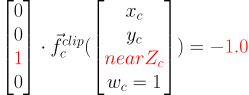
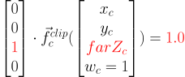
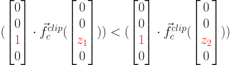

Standard Perspective Matrix¶
Purpose¶
Derive the standard perspective matrix that OpenGL expects.
Description¶
Turn our NDC into Clip Space¶
Matrix form of perspective projection¶

Scale Camera-space x by Camera-space z¶

resulting in

Scale the camera space x by the camera space z¶
Scale Camera-space y by Camera-space z¶

resulting in

Scale the camera space y by the cameraspace z¶
Translate Rectangular Prism’s Center to Center¶
 // centered on x
// centered on x
// centered on y
;


Scale by inverse of the dimensions of the Rectangular Prism¶
;
;
;


Premultiply the matricies¶

Multiply them all together to get the following. The elements of this premultiplied matrix have no geometric meaning to the author, and that’s ok. The matricies above all of geometric meaning, and we premultiply them together for computational efficiency, as well as being able to do the next step in clip space, which we couldn’t do without having the premultiplied matrix.
![\begin{bmatrix}
{x_{ndc}} \\
{y_{ndc}} \\
{z_{ndc}} \\
{w_{ndc}=1} \\
\end{bmatrix} = \vec{f}_{c}^{ndc}(\begin{bmatrix}
{x_{c}} \\
{y_{c}} \\
{z_{c}} \\
{w_{c}=1} \\
\end{bmatrix}; farZ_c, nearZ_c, top, right) = \begin{bmatrix}
{nearZ_c \over {right * \textcolor{red}{z_c}}} & 0 & 0 & 0 \\
0 & {nearZ_c \over {top*\textcolor{red}{z_c}}} & 0 & 0 \\
0 & 0 & {2 \over {nearZ_c - farZ_c}} & {-({farZ_c + nearZ_c}) \over {nearZ_c - farZ_c}} \\
0 & 0 & 0 & 1
\end{bmatrix} *
\begin{bmatrix}
{x_{c}} \\
{y_{c}} \\
{z_{c}} \\
{w_{c}=1} \\
\end{bmatrix}](images/math/c2d1f70b9335b291b69ea2f81452719268943567.svg)
As a quick smoke test to ensure that the aggregate matrix works correctly, let’s test the bounds of the frustum and make sure that they map to the NDC cube.
Given that is negative, assuming is equal to , goes to , which is goes to .
Given that is negative, assuming is equal to
, goes to , which is  goes to .
goes to .
Given that is , if , . Given that is , if , .
Clip Space¶
convert the data from NDC to clip-space.
We have never used clip-space in the class, only NDC, because 4D space is confusing geometrically, nevermind the fact that (NDCx NDCy NDCz) = (Clipx/Clipw, Clipy/Clipy, Clipz/Clipz)
The purpose of going to clip space is that eventually we will be able to remove the camera space’s z coordinate from the matrix. This will allow us to use one perspective projection matrix for all vertices, independent of the z coordinate of each input vertex.
I assume, without any evidence to support me, that this was done for efficiency reasons when using OpenGL’s fixed function pipeline. (Side note, the standard perspective projection matrix, which we will get to by demo 25, does not linearly position the to data into NDC. Everything we’ve done so far in the class does. The standard perspective matrix ends up having less Z-fighting close to , and more problems with Z-fighting near farZ_c)
OpenGL will automatically convert from clip space to NDC such as follows.

So to put our NDC data into clip space, knowing what OpenGL is going to do in the equation above, we need to decide what we want our clip space value, to be, and do the inverse of the equation above

Since we want to get the relative to camera space out of the premultiplie matrix above, we choose the following

because multiplying by this matrix will remove the out of the upper left quadrant.
Remove Z of Camera Space from Part of the Matrix¶
To get camera z out of the matrix, where it’s currently in two denominators, we can use knowledge of clip space, wherein we put cameraspace’s z into W. because cameraSpace’s z coordinate is negative, we want to scale all dimensions without reflecting over the origin, hence the negative sign in .
![\begin{bmatrix}
{x_{clip}} \\
{y_{clip}} \\
{z_{clip}} \\
{w_{clip}} \\
\end{bmatrix}
& = \vec{f}_{c}^{clip}(\begin{bmatrix}
{x_c} \\
{y_c} \\
{z_c} \\
{w_c=1} \\
\end{bmatrix}; farZ_c, nearZ_c, top, right) \\
& = (\vec{f}_{ndc}^{clip} \circ \vec{f}_{c}^{ndc}) *
\begin{bmatrix}
{x_c} \\
{y_c} \\
{z_c} \\
{w_c=1} \\
\end{bmatrix} \\
& = \begin{bmatrix}
\textcolor{red}{z_c} & 0 & 0 & 0 \\
0 & \textcolor{red}{z_c} & 0 & 0 \\
0 & 0 & \textcolor{red}{z_c} & 0 \\
0 & 0 & 0 & \textcolor{red}{z_c}
\end{bmatrix} * \begin{bmatrix}
{nearZ_c \over {right * \textcolor{red}{z_c}}} & 0 & 0 & 0 \\
0 & {nearZ_c \over {top*\textcolor{red}{z_c}}} & 0 & 0 \\
0 & 0 & {2 \over {nearZ_c - farZ_c}} & {-({farZ_c + nearZ_c}) \over {nearZ_c - farZ_c}} \\
0 & 0 & 0 & 1
\end{bmatrix} *
\begin{bmatrix}
{x_c} \\
{y_c} \\
{z_c} \\
{w_c=1} \\
\end{bmatrix} \\
& = \begin{bmatrix}
{nearZ_c \over right} & 0 & 0 & 0 \\
0 & {nearZ_c \over top} & 0 & 0 \\
0 & 0 & { \textcolor{red}{z_c}* {2 \over {nearZ_c - farZ_c}}} & { \textcolor{red}{z_c}*{-({farZ_c + nearZ_c}) \over {nearZ_c - farZ_c}}} \\
0 & 0 & 0 & \textcolor{red}{z_c}
\end{bmatrix} *
\begin{bmatrix}
{x_c} \\
{y_c} \\
{z_c} \\
{w_c=1} \\
\end{bmatrix}](images/math/1c2ad0f6a9fb79e14e9b2356b783d5528c18c5de.svg)
The result of this is in clip space, where for the first time, our w component is not 1, but .
Turning clip space back into NDC
![\begin{bmatrix}
{x_{ndc}} \\
{y_{ndc}} \\
{z_{ndc}} \\
{w_{ndc}} \\
\end{bmatrix}
& = \begin{bmatrix}
{x_{clip} / z_{clip}} \\
{y_{clip} / z_{clip}} \\
{z_{clip} / z_{clip}} \\
{w_{clip} / z_{clip}} \\
\end{bmatrix} \\
& = \begin{bmatrix}
\textcolor{red}{{1 \over {z_c}}} & 0 & 0 & 0 \\
0 & \textcolor{red}{{1 \over {z_c}}} & 0 & 0 \\
0 & 0 & \textcolor{red}{{1 \over {z_c}}} & 0 \\
0 & 0 & 0 & \textcolor{red}{{1 \over {z_c}}}
\end{bmatrix} * \begin{bmatrix}
{{nearZ_c \over right} * x_{c}} \\
{{nearZ_c \over top} * y_{c}} \\
{\textcolor{red}{z_c}^2 * {2 \over {nearZ_c - farZ_c}} + {\textcolor{red}{z_c}*{-({farZ_c + nearZ_c}) \over {nearZ_c - farZ_c}}}}\\
{\textcolor{red}{z_c}} \\
\end{bmatrix}](images/math/c505b83e56ef24d97091a8e93b3b65c3e90e86f8.svg)
To test a corner of the frustum as a smoke test, say
![\begin{bmatrix}
{x_{ndc}} \\
{y_{ndc}} \\
{z_{ndc}} \\
{w_{ndc}=1} \\
\end{bmatrix} & = \vec{f}_{c}^{ndc}(\begin{bmatrix}
{x_{c} = right} \\
{y_{c} = top} \\
{z_{c} = nearZ_c} \\
{w_{c}=1} \\
\end{bmatrix}; farZ_c, nearZ_c, top, right) \\
& = \begin{bmatrix}
\textcolor{red}{{1 \over {z_c}}} & 0 & 0 & 0 \\
0 & \textcolor{red}{{1 \over {z_c}}} & 0 & 0 \\
0 & 0 & \textcolor{red}{{1 \over {z_c}}} & 0 \\
0 & 0 & 0 & \textcolor{red}{{1 \over {z_c}}}
\end{bmatrix} * \begin{bmatrix}
{{nearZ_c \over right} * x_{c}} \\
{{nearZ_c \over top} * y_{c}} \\
{\textcolor{red}{z_c}^2 * {2 \over {nearZ_c - farZ_c}} + {\textcolor{red}{z_c}*{-({farZ_c + nearZ_c}) \over {nearZ_c - farZ_c}}}}\\
{\textcolor{red}{z_c}} \\
\end{bmatrix} \\
& = \begin{bmatrix}
{{nearZ_c \over right} * x_{c}} \\
{{nearZ_c \over top} * y_{c}} \\
{\textcolor{red}{z_c} * {2 \over {nearZ_c - farZ_c}} + {-({farZ_c + nearZ_c}) \over {nearZ_c - farZ_c}}}\\
{1} \\
\end{bmatrix} \\
& = \begin{bmatrix}
{1} \\
{1} \\
{1} \\
{1} \\
\end{bmatrix}](images/math/2eee068d6b7c2f0ecfc5c422ec0deacceb4fc5e8.svg)
And that’s what we’d expect and the top right corner of the near plane of the frustum should go to the upper right corner with a z value of 1, as -1 is where the back plane must go.
If we had used , then , which is what we want, as negative axis goes into the monitor.
Remove Z of Camera Space from the Rest of the Matrix¶
We successfully moved out of the upper left quadrant, but in doing so, we moved it down to the lower right. Can we get rid of it there too? Turn out, we can.
Since the vector multiplied by this matrix will provide as it’s third element, we can put into the by taking the explicit vesion of it out of the fourth column, and put into the third column’s .
![\begin{bmatrix}
x_{clip} \\
y_{clip} \\
z_{clip} \\
w_{clip} \\
\end{bmatrix}
& = \vec{f}_{c}^{clip}(\begin{bmatrix}
x_c \\
y_c \\
z_c \\
w_c=1 \\
\end{bmatrix}; farZ_c, nearZ_c, top, right) \\
& = (\vec{f}_{ndc}^{clip} \circ \vec{f}_{c}^{ndc}) *
\begin{bmatrix}
x_c \\
y_c \\
z_c \\
w_c=1 \\
\end{bmatrix} \\
& = {1 \over {z_c}} * \begin{bmatrix}
nearZ_c \over right & 0 & 0 & 0 \\
0 & nearZ_c \over top & 0 & 0 \\
0 & 0 & z_c * {2 \over {nearZ_c - farZ_c}} & z_c * {-{farZ_c + nearZ_c} \over {nearZ_c - farZ_c}} \\
0 & 0 & \textcolor{red}{0} & \textcolor{red}{z_c}
\end{bmatrix} *
\begin{bmatrix}
x_c \\
y_c \\
z_c \\
\textcolor{red}{w_c=1} \\
\end{bmatrix} \\
& = {1 \over {z_c}} * \begin{bmatrix}
nearZ_c \over right & 0 & 0 & 0 \\
0 & nearZ_c \over top & 0 & 0 \\
0 & 0 & z_c * {2 \over {nearZ_c - farZ_c}} & z_c*{-{farZ_c + nearZ_c} \over {nearZ_c - farZ_c}} \\
0 & 0 & \textcolor{red}{1} & \textcolor{red}{0}
\end{bmatrix} *
\begin{bmatrix}
x_c \\
y_c \\
z_c \\
w_c=1 \\
\end{bmatrix} \\
& = {1 \over {z_c}} * \begin{bmatrix}
{{nearZ_c \over right} * x_{c}} \\
{{nearZ_c \over top} * y_{c}} \\
{\textcolor{red}{z_c}^2 * {2 \over {nearZ_c - farZ_c}} + z_c * {{-({farZ_c + nearZ_c}) \over {nearZ_c - farZ_c}}}}\\
\textcolor{red}{z_c} \\
\end{bmatrix}](images/math/ca2f255e29326d389ad270323b2a50444d18a798.svg)
To remove from the matrix, all that to do is remove it from row 3, somehow. We’re about to ride dirty.
If we were to change row three, it would not be the same transformation. But if we ensure the following two properties of our changes, everything will be alright
We need the


Ordering is preserved after the function is applied, i.e. monotonicity. if , then .
If we can make a function, that like the third row of the matrix, has those properties, we can replace the third row and remove camera space’s z, , from the matrix. This is desirable because, if it were to exist, would would not need per vertex to create a custom pespective matrix.
Towards that, let’s look at these jibronies.
![\vec{f}_{c}^{clip}(\begin{bmatrix}
{x_c} \\
{y_c} \\
{z_c} \\
{w_c=1} \\
\end{bmatrix}; farZ_c, nearZ_c, top, right) & = (\vec{f}_{ndc}^{clip} \circ \vec{f}_{4}) *
\begin{bmatrix}
{x_c} \\
{y_c} \\
{z_c} \\
{w_c=1} \\
\end{bmatrix} \\
& = \begin{bmatrix}
{-nearZ_c \over right} & 0 & 0 & 0 \\
0 & {-nearZ_c \over top} & 0 & 0 \\
0 & 0 & {2*(-z_c) \over {nearZ_c - farZ_c}} & {-z_c*{-{farZ_c + nearZ_c} \over {nearZ_c - farZ_c}}} \\
0 & 0 & 0 & -z_c
\end{bmatrix} *
\begin{bmatrix}
{x_c} \\
{y_c} \\
{z_c} \\
{w_c=1} \\
\end{bmatrix} \\
& = \begin{bmatrix}
{-nearZ_c \over right} & 0 & 0 & 0 \\
0 & {-nearZ_c \over top} & 0 & 0 \\
0 & 0 & \textcolor{red}{{2*(-z_c) \over {nearZ_c - farZ_c}}} & \textcolor{red}{{-z_c*{-{farZ_c + nearZ_c} \over {nearZ_c - farZ_c}}}} \\
0 & 0 & -1 & 0
\end{bmatrix} *
\begin{bmatrix}
{x_c} \\
{y_c} \\
{z_c} \\
{w_c=1} \\
\end{bmatrix}
..
// clipSpace.z = A* c.z + B * 1.0 (the first column and the second column are zero because z is independent of x and y)
// for nearZ, which must map to -1.0,
// ndc.z = clipSpace.z / clipSpace.w = (A * nearZ + B) / nearZ = -1.0
// for farZ, which must map to 1.0,
// ndc.z = clipSpace.z / clipSpace.w = (A * farZ + B) / farZ = 1.0
//
// (A * nearZ + B) = -nearZ (1)
// (A * farZ + B) = farZ (2)
//
// B = -nearZ - A * nearZ (3) (from 1)
// (A * farZ + -nearZ - A * nearZ) = farZ (4) (from 2 and 3)
// (farZ - nearZ)*A + -nearZ ) = farZ (5)
// A = (farZ + nearZ)/(farZ-nearZ) (6)
//
// we found A, now substitute that in to get B
//
// (farZ + nearZ)/(farZ-nearZ) * nearZ + B = -nearZ (from 1 and 6)
// B = -nearZ - (farZ + nearZ)/(farZ-nearZ) * nearZ
// B = (-1 - (farZ + nearZ)/(farZ-nearZ)) * nearZ
// B = -(1 + (farZ + nearZ)/(farZ-nearZ)) * nearZ
// B = -( (farZ-nearZ + (farZ + nearZ))/(farZ-nearZ)) * nearZ
// B = -( (2*farZ)/(farZ-nearZ)) * nearZ
// B = (-2*farZ*nearZ)/(farZ-nearZ)
//
// now that we have A and B, write down the function, and ensure that it is
// monotonic from (nearZ, farZ), inclusive
// z_ndc = ((farZ + nearZ)/(farZ-nearZ) * cameraSpace.z + (-2*farZ*nearZ)/(farZ-nearZ)) / cameraSpace.z
// TODO -- proof of monotonicity
// NOW OUR PERSPECTIVE MATRIX IS INDEPENDENT OF cameraSpace.z!!!
mat4 camera_space_to_clip_space = transpose(mat4(
-nearZ/right, 0.0, 0.0, 0.0,
0.0, -nearZ/top, 0.0, 0.0,
0.0, 0.0, (farZ + nearZ)/(farZ-nearZ), (-2*farZ*nearZ)/(farZ-nearZ),
0.0, 0.0, -1.0, 0.0));
return camera_space_to_clip_space * cameraSpace;
24
// mat4 camera_space_to_clip_space = transpose(mat4(
// --nearZ/right, 0.0, 0.0, 0.0,
// 0.0, --nearZ/top, 0.0, 0.0,
// 0.0, 0.0, (-farZ + -nearZ)/(-farZ--nearZ), (-2*-farZ*-nearZ)/(-farZ--nearZ),
// 0.0, 0.0, -1.0, 0.0));
mat4 camera_space_to_clip_space1 = transpose(mat4(
nearZ/right, 0.0, 0.0, 0.0,
0.0, nearZ/top, 0.0, 0.0,
0.0, 0.0, -(farZ + nearZ)/(-farZ+nearZ), (-2*farZ*nearZ)/(-farZ+nearZ),
0.0, 0.0, -1.0, 0.0));
// End (1)
// For (2)
mat4 reflect_z = transpose(mat4(
1.0, 0.0, 0.0, 0.0,
0.0, 1.0, 0.0, 0.0,
0.0, 0.0, -1.0, 0.0,
0.0, 0.0, 0.0, 1.0));
// camera_space_to_clip_space2 = reflect_z * camera_space_to_clip_space1
mat4 camera_space_to_clip_space2 = transpose(mat4(
nearZ/right, 0.0, 0.0, 0.0,
0.0, nearZ/top, 0.0, 0.0,
0.0, 0.0, -(farZ + nearZ)/(farZ-nearZ), (-2*farZ*nearZ)/(farZ-nearZ),
0.0, 0.0, -1.0, 0.0));
// End (2)
return camera_space_to_clip_space2 * cameraSpace;](images/math/a2b118a94c3bea02ab018fecba1ed17d9e59f30f.svg)